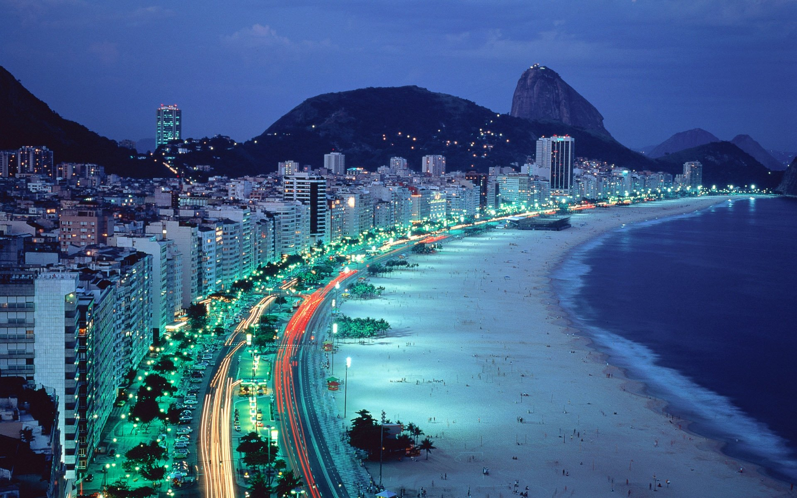
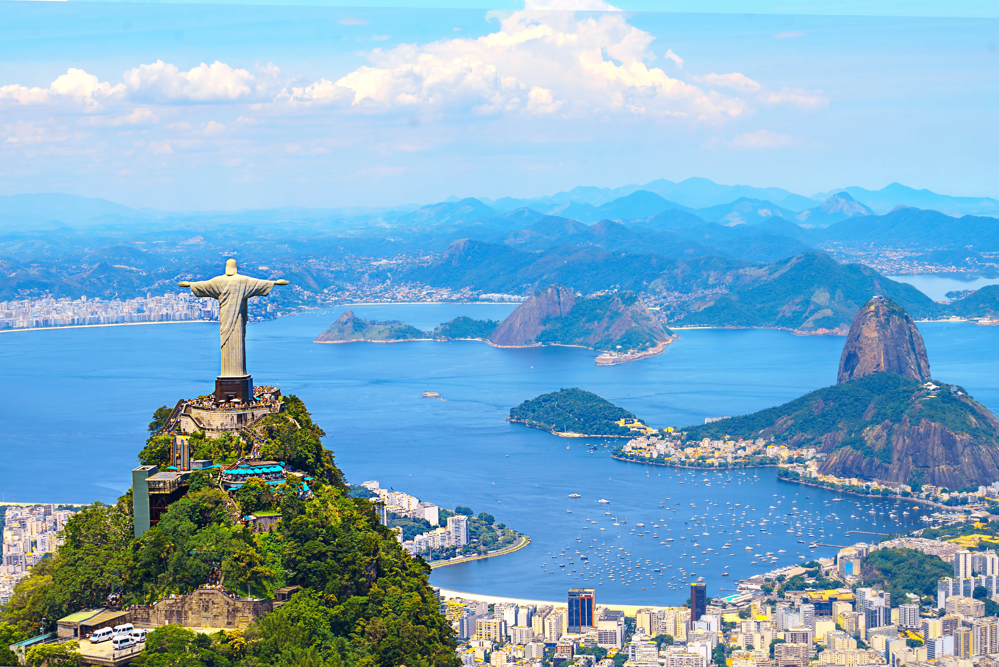

Belezas Naturais Deslumbrantes: O Rio de Janeiro é abençoado por uma natureza exuberante, com praias de areias douradas, montanhas imponentes e florestas tropicais. A vista do Pão de Açúcar e do Cristo Redentor é de tirar o fôlego, proporcionando uma das paisagens urbanas mais deslumbrantes do mundo.
Patrimônio Arquitetônico Histórico: A cidade preserva um rico patrimônio arquitetônico, com construções que remontam à época colonial, como o Palácio Imperial e o Convento de Santo Antônio. O centro histórico do Rio de Janeiro é reconhecido pela UNESCO como Patrimônio Mundial da Humanidade.
Cultura Vibrante e Diversa: O Rio de Janeiro é um caldeirão cultural, onde diferentes manifestações artísticas se encontram e se misturam. Da música ao carnaval, passando pela dança, teatro e literatura, a cidade é um celeiro de talentos e expressões culturais.
Gastronomia Saborosa e Variada: A culinária carioca é uma fusão de influências indígenas, africanas e europeias, resultando em pratos deliciosos e únicos, como a feijoada, a moqueca e o acarajé. Além disso, o Rio de Janeiro conta com uma infinidade de restaurantes que oferecem desde comida de rua até alta gastronomia.
Esportes e Lazer ao Ar Livre: Com um clima tropical e paisagens deslumbrantes, o Rio de Janeiro é o lugar ideal para a prática de esportes e atividades ao ar livre. Surf, stand-up paddle, trilhas, escaladas e passeios de bicicleta são apenas algumas das opções disponíveis para os amantes do esporte e da natureza.
Cidadãos Acolhedores e Hospitaleiros: Os cariocas são conhecidos por sua simpatia e hospitalidade, recebendo os visitantes de braços abertos e fazendo com que se sintam em casa. O calor humano e a receptividade são características marcantes da população do Rio de Janeiro.
Educação e Pesquisa de Qualidade: O Rio de Janeiro abriga algumas das melhores universidades e centros de pesquisa do país, como a Universidade Federal do Rio de Janeiro (UFRJ) e o Instituto Nacional de Matemática Pura e Aplicada (IMPA), contribuindo para o avanço do conhecimento em diversas áreas.
Turismo Cultural e Religioso: A cidade é rica em atrativos culturais e religiosos, como o Sambódromo, onde acontece o famoso desfile das escolas de samba durante o carnaval, e a Basílica de Nossa Senhora Aparecida, um importante centro de peregrinação católica.
Economia Dinâmica e Diversificada: O Rio de Janeiro é um importante polo econômico do Brasil, com destaque para os setores de petróleo e gás, turismo, entretenimento e serviços. A cidade também é sede de diversas empresas nacionais e internacionais, contribuindo para a geração de empregos e riqueza.
Preservação Ambiental e Sustentabilidade: Apesar dos desafios ambientais enfrentados pela cidade, o Rio de Janeiro tem investido em políticas de preservação e sustentabilidade, visando proteger suas riquezas naturais para as gerações futuras. Projetos como a revitalização da Baía de Guanabara e a expansão de áreas verdes demonstram o compromisso da cidade com o meio ambiente.
